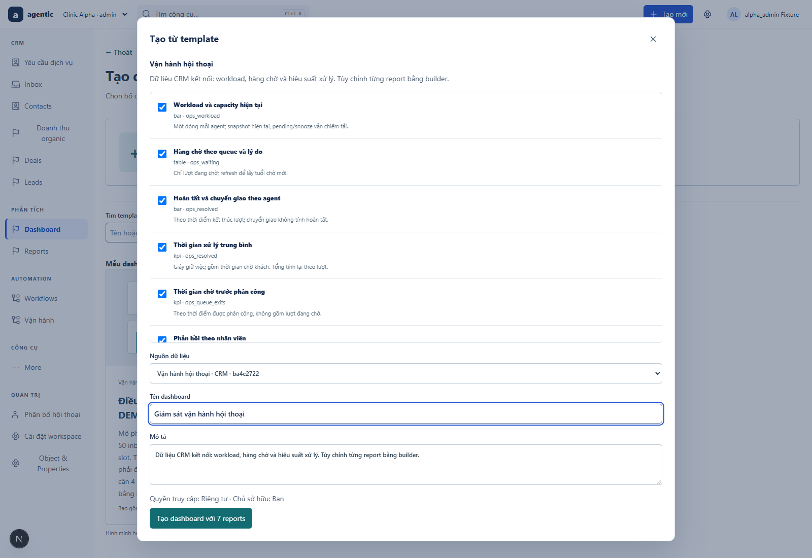
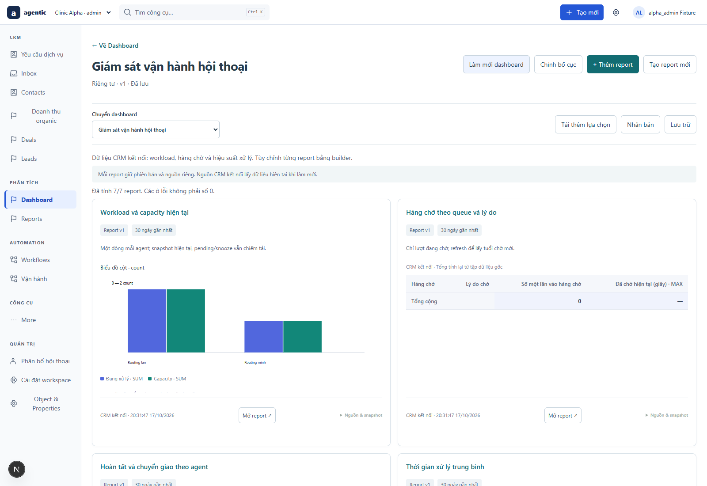
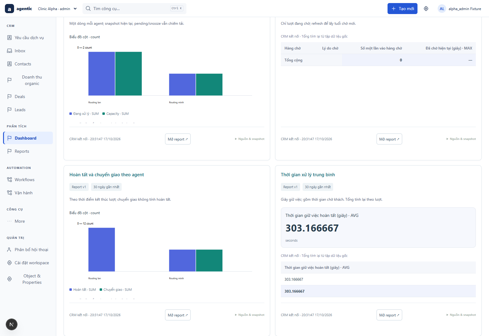
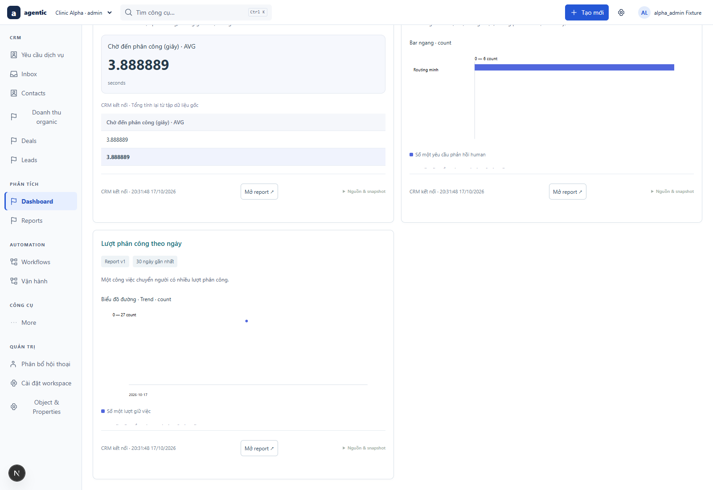
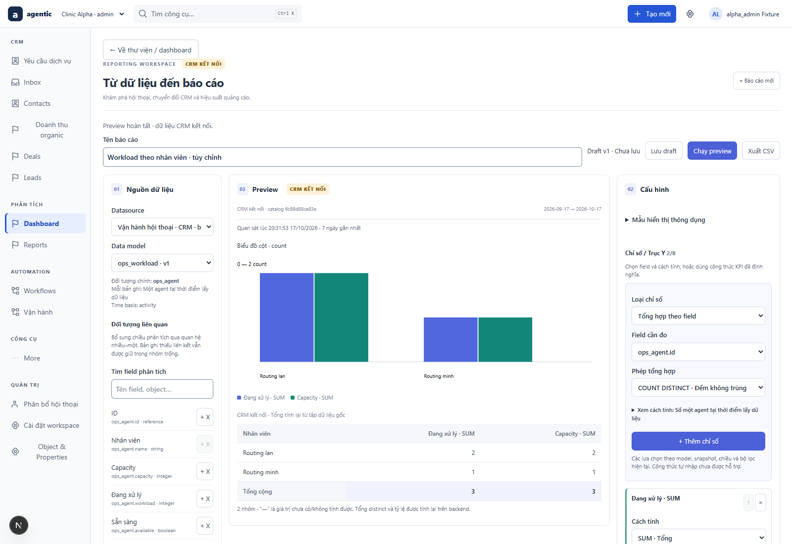
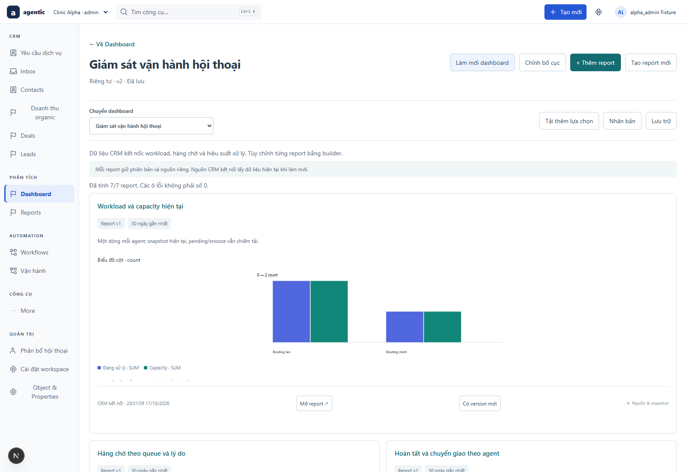
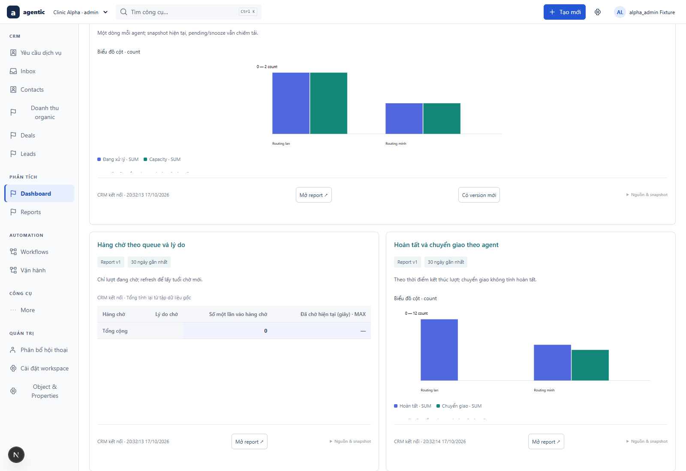
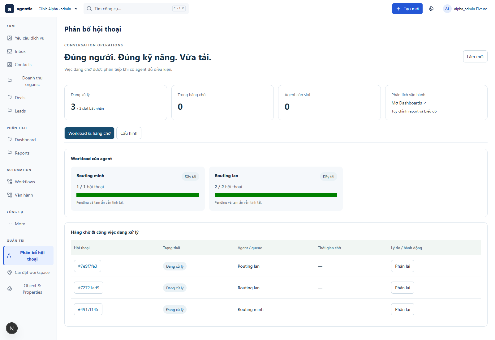
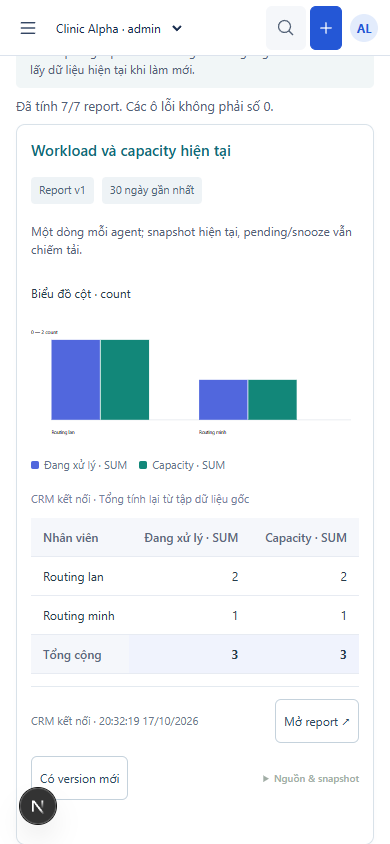

SRC-085 · NATIVE CRM · SYNTHETIC DATA · 2026-10-17T13:32:21.338ZGiám sát vận hành bằng Dashboard và Report Builder
6 đối tượng, 7 model và 7 saved reports. Một core cho truy vấn, nhóm/lọc, biểu đồ, KPI, CSV và bố cục. Ảnh chụp ứng dụng local thực; dữ liệu nghiệm thu synthetic qua mock_messenger, không phải mockup.
Chọn template và nguồn CRM kết nối

Workload và hàng chờ trên Dashboard

Kết quả xử lý và thời gian giữ việc

Thời gian chờ, phản hồi và xu hướng phân công

Sửa report bằng đối tượng, thuộc tính và phép tổng hợp

Bố cục đã lưu, report version cũ vẫn được ghim

Đầy capacity: report ghi nhận một lượt đang chờ
Sau close: hàng chờ giảm, hoàn tất tăng khi làm mới

Routing giữ điều phối và dẫn sang Dashboards

Dashboard trên màn hình 390px
